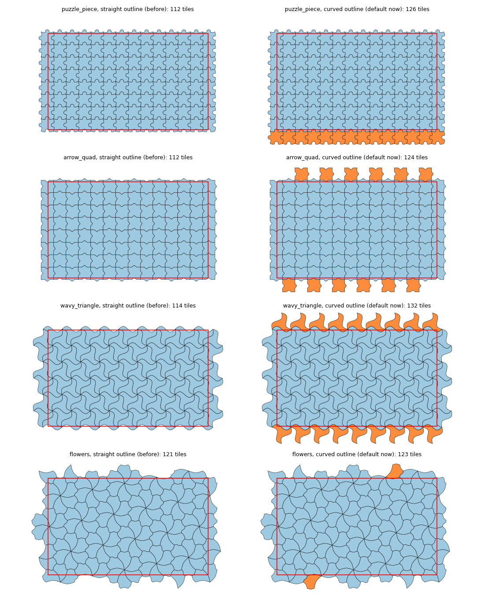

The isotile pin moves to a4625b7 (fill_region offset, outline for cover and fill_region). Tiling.with_offset passes the offset to fill_region (generate of 10,000 hexagons with an offset takes 0.14 s instead of 0.26 s, bit-identical results), and tilings with curved edges select tiles by the curved outline, which adds boundary tiles for some presets without changing a layout at the default offset (31 layout cases, footprints identical); a scan of 15 presets x 6 offsets changes 11 of 90 grid layouts, one beyond 25 percent (tree, see the page).
Follows isotile-offset-pr (isotile PR 8, isotile#7) and isotile-curved-cover-pr (isotile PR 9, isotile#6) for the adoption in proposal-isotile-adoption. Both isotile changes are in a4625b7.
pyproject.toml and uv.lock: the rev of isotile (uv.lock edited by hand; uv lock --locked and uv sync --frozen pass). The wheel-smoke-test step reads the rev from pyproject.toml and is unchanged. No other file mentions the old rev.Tiling.with_offset: _IsotileTiling.generate calls fill_region(..., offset=self._offset). The second pass (with_frame and a second cover) is deleted.outline=None now selects tiles by the curved outline for a tiling with at least one edge curve. carto-flow takes the default. The module docstring, Tiling.generate, docs/explanations/tiling-system.md and the changelog (breaking changes of 3.0.0) state it.tests/test_tilings_golden.py no longer exempts the curved presets (every tile of the former implementation is returned for all 15 presets and 81 types, and every tile it did not return overlaps the region), test_curved_presets_select_tiles_by_the_curved_outline (9 presets) and test_curved_outline_adds_tiles_at_the_boundary (112 to 126 tiles); tests/test_tiling_lattice_options.py compares generate with an offset to fill_region(offset=...) (tile cells, aspects and transforms equal). The golden fixtures need no change: they hold the tiles of the former class that overlap the region, and the new tile sets contain all of them.tiling_identity.py: 26 tilings (square, hexagon pointy and flat, two triangles, two quadrilaterals, 15 presets, types 1, 7, 41, 93) x 2 regions (one at the origin, one 8e6 away) x 3 sizes (n_tiles 100 and 37, tile_size) x 2 margins x 2 rotations x 6 offsets = 3,744 cases. Per case the polygon coordinates, tile transforms, edge and vertex-only adjacency, tile size and inscribed radius are compared exactly. Runs: A = main with isotile 392484c, B = main with a4625b7, C = this branch with a4625b7.
| comparison | result | file |
|---|---|---|
| B against C (the offset refactor alone) | 3,744 of 3,744 identical | tiling_identity_B_vs_C.txt |
| A against C, 17 non-curved tilings (square, hexagon, triangles, quadrilaterals, 6 straight presets, 4 types) | all 144 cases of each identical | tiling_identity_A_vs_C.txt |
| A against C, 9 curved presets | 30 to 129 of 144 cases differ per preset (more tiles at the boundary), see the next section | same file |
Layout level: offset_compare.py on the offset cases of the step 3 experiments (grid and mosaic of the states with hexagon and square, offsets (0, 0), (0.25, 0.25), (0.5, 0.5), and the mosaic with rotation 30 centered and moved): assignments, regions, tile polygons and tile size identical in all 14 cases, main with the old pin against the branch (offset_identity_output.txt). The tests of tests/test_tiling_lattice_options.py pass.
Time of generate, 9,919 to 9,960 hexagons, region (0, 0, 100, 60), margin 0.1, best of 7, two rounds (time_generate.py, timing.txt):
| no offset | offset (0.3, 0.6) | |
|---|---|---|
| main, isotile 392484c | 0.138 and 0.144 s | 0.252 and 0.260 s |
| main, isotile a4625b7 | 0.142 and 0.146 s | 0.256 and 0.280 s |
| branch, isotile a4625b7 | 0.139 and 0.143 s | 0.139 and 0.142 s |
The second pass cost 0.11 to 0.14 s; with the offset in fill_region the time equals the time without an offset.
Default outline now curved (isotile#6). For fill_region((0, 0, 10, 6), n_tiles=100, margin=0.1), tiles before (straight outline) and now: puzzle_piece 112 and 126, arrow_quad 112 and 124, wavy_triangle 114 and 132, flowers 121 and 123.
Across the 3,744 tiling cases the tile totals of A and C differ for 9 curved presets only (for example interlocking_hexagon 13,779 to 14,964, puzzle_piece 13,530 to 14,114, wavy_triangle 14,206 to 14,753); all other tilings have the same totals (tiling_identity_A_vs_C.txt).
layout_cases.py (the script of step 1, extended): the 15 cases of the step 1 and step 3 pages and 16 new ones, puzzle_piece, wavy_triangle, flowers, arrow_quad on the states and the districts, grid and mosaic (districts grouped by state), morph=False, layouts_oldpin.log (main, 392484c), layouts_newpin.log (main, a4625b7), layouts_branch.log. Acceptance rule of step 1: the mean distance may change by the larger of 25 percent of the old value and, for the states grid layouts, the range of the same metric over six lattice offsets of the same tiling (old and new pin together: phase_oldpin.log, phase_newpin.log). Unassigned core tiles are given for the mosaic cases; the split regions column is the number of regions with more than one edge-connected block of tiles (mosaic: the layout's own count of non-contiguous regions).
Results:
scalloped_hexagon cases, have identical assignments. Of the 16 new cases 11 have identical assignments; 5 have more lattice tiles (states grid puzzle_piece 160 to 188, flowers 165 to 171, arrow_quad 160 to 174; states mosaic wavy_triangle 490 to 524; districts mosaic wavy_triangle 1,210 to 1,264) so that the tile indices differ. In all 31 cases every region gets the same tile polygons (footprints.py, footprints_table.md): the additional tiles lie in the margin band and no region uses them. The mean distance, split regions and unassigned core tiles are equal in every case (change 0 percent, all within the tolerance).scalloped_hexagon, 5.2 and 6.3 s) and 0.7 s (states mosaic wavy_triangle, 2.3 and 3.0 s).With the default offset no layout changes, so there are no side-by-side layout figures; the visible change is the tile set of generate (figure above). Layouts at other offsets are in the next section. morph=True layouts are not compared (flow morph has numba noise of 1e-16).
Decision: the default is accepted. Passing outline="straight" in the calls of carto-flow would keep n_tiles of generate equal to main for the curved presets (112 instead of 126 for puzzle_piece) and reproduces every layout of main, also at other offsets (next section); it was not implemented.
tree caseoffset_scan.py: all 15 presets x the 6 offsets of the lattice-phase scan x states, grid layout and mosaic layout (morph=False, 150 tiles from the population), 180 cases, three runs: main with isotile 392484c, the branch with a4625b7, and the branch with a4625b7 and fill_region forced to outline="straight" (run_scan.sh, scan_table.py, scan_table.md).
scalloped_quad at (0.5, 0.25) by +11 percent (0.870 to 0.968), and tree at (0.9, 0.1) by +52 percent (1.100 to 1.676), the only case beyond the 25 percent rule. The mosaic layout has none beyond 0.Cause for tree at (0.9, 0.1) (tree_probe.py, tree_iteration_probe.py, tree_contiguity.py):
assign_to_grid_hungarian), then fill_internal_holes and _fix_island_assignments. The refinement does not converge for this input with either tile set: from the fifth pass on it alternates between two assignments (mean distance 1.092 and 1.182 with 158 tiles, 1.139 and 1.143 with 175 tiles). After the refinement the means are 1.092 (158 tiles) and 1.139 (175 tiles), which is a small difference; hole filling then moves 2 tiles (1.100) or 3 tiles (1.196), and _fix_island_assignments moves 0 tiles (1.100) or 11 tiles (1.676). The jump is the island fix relocating 11 states on the 175-tile lattice.tree varies by this amount between lattice positions with either tile set.Conclusion: no bug in isotile or in carto-flow. The tile sets are correct (all former tiles present, the extra tiles lie outside the bounds of the states expanded by 10 percent, one-pass and two-step offsets agree). The jump is the sensitivity of the grid layout heuristic (non-converging refinement and island fix) to the set of candidate tiles, as the lattice-phase scan of step 1 already showed for the position of the lattice. It occurs in 1 of 90 grid cases beyond the rule and in none of the mosaic cases. If this sensitivity matters, passing outline="straight" in the calls reproduces the old layouts exactly (180 of 180 cases); it was not implemented.
2,092 passed, 2 skipped, 4 xfailed (full suite); ruff check, ruff format, mypy src, deptry src pass.

The four presets, straight-outline tiles (left, the former selection) and curved-outline tiles (right); orange tiles are selected only by the curved outline, the red rectangle is the region with margin (make_tiling_figure.py).